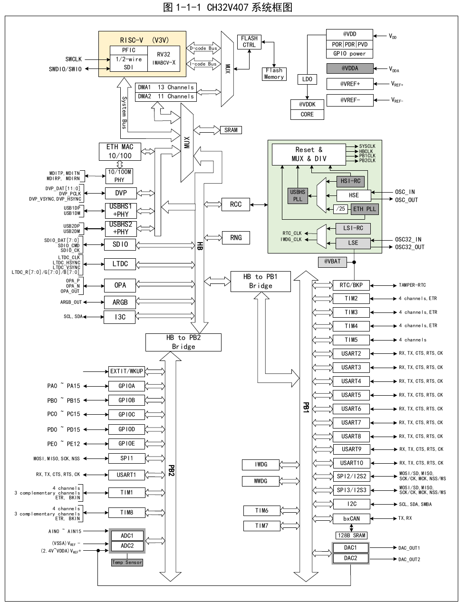
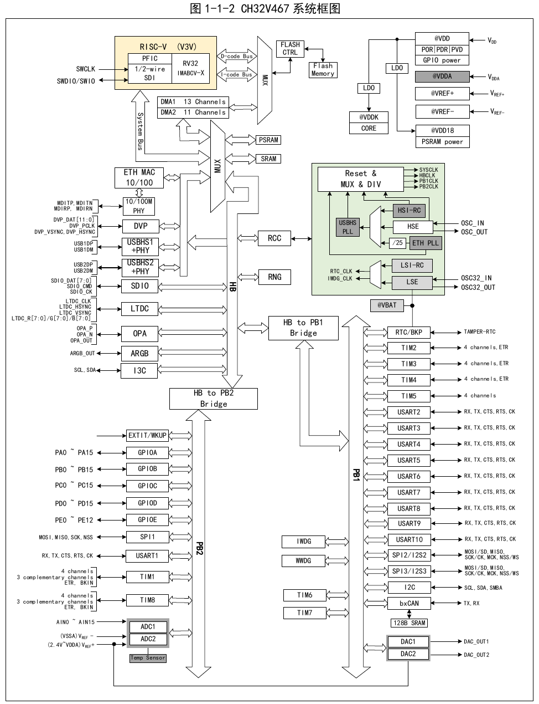
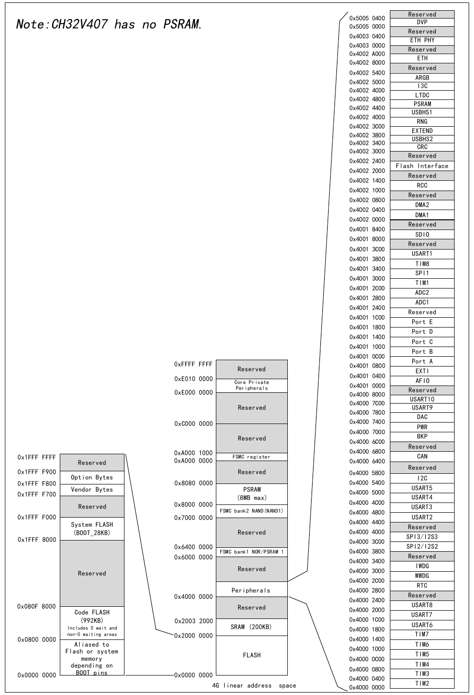

This series of chips is an industrial-grade general-purpose microcontroller based on the QingKe RISC-V3V core. The core, arbitration unit, DMA module, SRAM memory and other parts in its architecture interact through multiple bus groups. The system block diagrams are shown in Figure 1-1-1 and Figure 1-1-2.


The system includes: a general-purpose DMA controller to reduce CPU burden and improve efficiency; a hierarchical clock tree management to reduce the total operating power consumption of peripherals, along with data protection mechanisms, clock safety system protection mechanisms and other measures to increase system stability.
The chip contains program memory, data memory, core registers and peripheral registers, all addressed in a 4 GB linear space.
System memory stores data in little-endian format, i.e., the low byte is stored at the low address and the high byte is stored at the high address.

| Address Range | Region | Peripheral |
|---|---|---|
| 0x5005_0000 – 0x5005_03FF | Reserved | DVP |
| 0x4003_0000 – 0x4003_03FF | Reserved | ETH PHY |
| 0x4002_8000 – 0x4002_9FFF | Reserved | ETH |
| 0x4002_5000 – 0x4002_53FF | Reserved | ARGB |
| 0x4002_4C00 – 0x4002_4FFF | I3C | |
| 0x4002_4800 – 0x4002_4BFF | LTDC | |
| 0x4002_4400 – 0x4002_47FF | PSRAM | |
| 0x4002_4000 – 0x4002_43FF | USBHS1 | |
| 0x4002_3C00 – 0x4002_3FFF | RNG | |
| 0x4002_3800 – 0x4002_3BFF | EXTEND | |
| 0x4002_3400 – 0x4002_37FF | USBHS2 | |
| 0x4002_3000 – 0x4002_33FF | CRC | |
| 0x4002_2000 – 0x4002_23FF | Reserved | Flash Interface |
| 0x4002_1000 – 0x4002_13FF | Reserved | RCC |
| 0x4002_0400 – 0x4002_07FF | Reserved | DMA2 |
| 0x4002_0000 – 0x4002_03FF | Reserved | DMA1 |
| 0x4001_8000 – 0x4001_83FF | Reserved | SDIO |
| 0x4001_3800 – 0x4001_3BFF | Reserved | USART1 |
| 0x4001_3400 – 0x4001_37FF | TIM8 | |
| 0x4001_3000 – 0x4001_33FF | SPI1 | |
| 0x4001_2C00 – 0x4001_2FFF | TIM1 | |
| 0x4001_2800 – 0x4001_2BFF | ADC2 | |
| 0x4001_2400 – 0x4001_27FF | ADC1 | |
| 0x4001_1800 – 0x4001_1BFF | Reserved | Port E |
| 0x4001_1400 – 0x4001_17FF | Port D | |
| 0x4001_1000 – 0x4001_13FF | Port C | |
| 0x4001_0C00 – 0x4001_0FFF | Port B | |
| 0x4001_0800 – 0x4001_0BFF | Port A | |
| 0x4001_0400 – 0x4001_07FF | EXTI | |
| 0x4001_0000 – 0x4001_03FF | AFIO | |
| 0x4000_7C00 – 0x4000_7FFF | Reserved | USART10 |
| 0x4000_7800 – 0x4000_7BFF | USART9 | |
| 0x4000_7400 – 0x4000_77FF | DAC | |
| 0x4000_7000 – 0x4000_73FF | PWR | |
| 0x4000_6C00 – 0x4000_6FFF | BKP | |
| 0x4000_6400 – 0x4000_67FF | Reserved | CAN |
| 0x4000_5400 – 0x4000_57FF | Reserved | I2C |
| 0x4000_5000 – 0x4000_53FF | USART5 | |
| 0x4000_4C00 – 0x4000_4FFF | USART4 | |
| 0x4000_4800 – 0x4000_4BFF | USART3 | |
| 0x4000_4400 – 0x4000_47FF | Reserved | USART2 |
| 0x4000_3C00 – 0x4000_3FFF | SPI3/I2S3 | |
| 0x4000_3800 – 0x4000_3BFF | SPI2/I2S2 | |
| 0x4000_3000 – 0x4000_33FF | Reserved | IWDG |
| 0x4000_2C00 – 0x4000_2FFF | WWDG | |
| 0x4000_2800 – 0x4000_2BFF | RTC | |
| 0x4000_2000 – 0x4000_23FF | Reserved | USART8 |
| 0x4000_1C00 – 0x4000_1FFF | USART7 | |
| 0x4000_1800 – 0x4000_1BFF | USART6 | |
| 0x4000_1400 – 0x4000_17FF | TIM7 | |
| 0x4000_1000 – 0x4000_13FF | TIM6 | |
| 0x4000_0C00 – 0x4000_0FFF | TIM5 | |
| 0x4000_0800 – 0x4000_0BFF | TIM4 | |
| 0x4000_0400 – 0x4000_07FF | TIM3 | |
| 0x4000_0000 – 0x4000_03FF | TIM2 |
Note: CH32V407 has no PSRAM.
Other memory regions:
| Address Range | Region |
|---|---|
| 0xE000_0000 – 0xE010_0000 | Core Private Peripherals |
| 0xA000_0000 – 0xA000_0FFF | FSMC register |
| 0x8080_0000 – 0x807F_FFFF | PSRAM (8 MB max, CH32V467 only) |
| 0x7000_0000 – 0x7000_FFFF | FSMC bank2 NAND (NAND1) |
| 0x6000_0000 – 0x63FF_FFFF | FSMC bank1 NOR/PSRAM 1 |
| 0x2000_0000 – 0x2003_1FFF | SRAM (200 KB) |
| 0x0800_0000 – 0x080F_7FFF | Code FLASH (992 KB, includes 0-wait and non-0-wait areas) |
| 0x1FFF_F000 – 0x1FFF_7FFF | System FLASH (BOOT, 28 KB) |
| 0x1FFF_F700 – 0x1FFF_F7FF | Vendor Bytes (128 B) |
| 0x1FFF_F800 – 0x1FFF_F8FF | Option Bytes (128 B) |
| 0x1FFF_F900 – 0x1FFF_FFFF | Reserved |
| 0x0000_0000 | Aliased to Flash or system memory depending on BOOT pins |
Built-in zero-wait 200 KB SRAM for data storage; data is lost on power-down. Starting address 0x20000000, supports byte, half-word (2 bytes), and word (4 bytes) access.
Built-in 992 KB program flash memory area (Code FLASH), i.e., the user area, for user application programs and constant data storage. Includes 480 KB of non-zero-wait program area and 512 KB of zero-wait program execution area.
64 KB of the zero-wait data SRAM can be configured for zero-wait program execution, resulting in 416 KB of non-zero-wait program area, 576 KB of zero-wait program execution area, and 136 KB of zero-wait data SRAM area.
Built-in 28 KB system storage area (System FLASH), i.e., the BOOT area, for system boot program storage (factory-fixed bootloader).
128 bytes for system non-volatile configuration information storage, used for vendor configuration word storage, factory-fixed, user cannot modify.
128 bytes for user-defined information storage, used for user option byte storage.
The system can select three different boot modes through the BOOT0 and BOOT1 pins.
| BOOT0 | BOOT1 | Boot Mode |
|---|---|---|
| 0 | X | Boot from program flash memory |
| 1 | 0 | Boot from system memory |
| 1 | 1 | Boot from internal SRAM |
The user selects the boot mode after reset by setting the state of the BOOT pins. Both system reset and power reset cause the BOOT pin values to be re-latched.
Depending on the boot mode, program flash memory, system memory, and internal SRAM have different access methods: